Reader · design mock-ups
A stage beside the explanation
The Explain page keeps each section's figure in the margin beside its paragraph. In the few sections where motion says more than a still, a stage appears at the top of the margin, stays put while you scroll that section, steps with the paragraph you are reading, and leaves when the section ends.
These are frames of a working mock-up in the reader's own colours and type, on a distillation paper as the example. The feature isn't built yet; the design note is in the reader's repository under docs/explain-stage.md.
▶ Scroll the mock-up itself · the stage follows your reading; press Animate on section 02
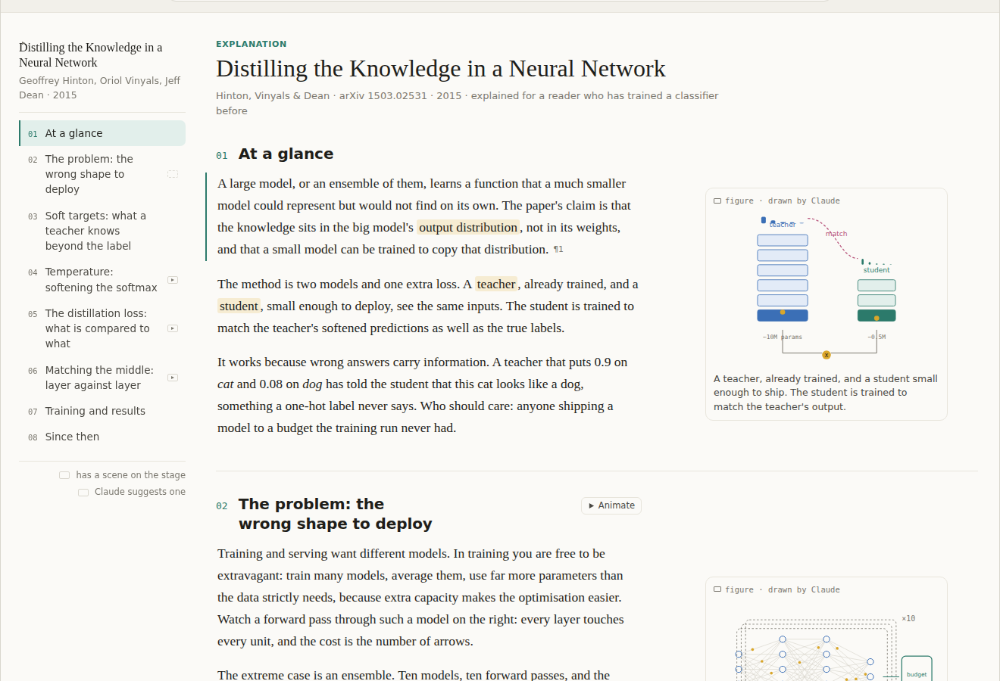
Figures first
Every section keeps its figure in the margin, as today. Only some sections get a scene: the ones Claude marks as worth animating, a mechanism or a loss rather than a table or a timeline, and the ones the reader asks for.
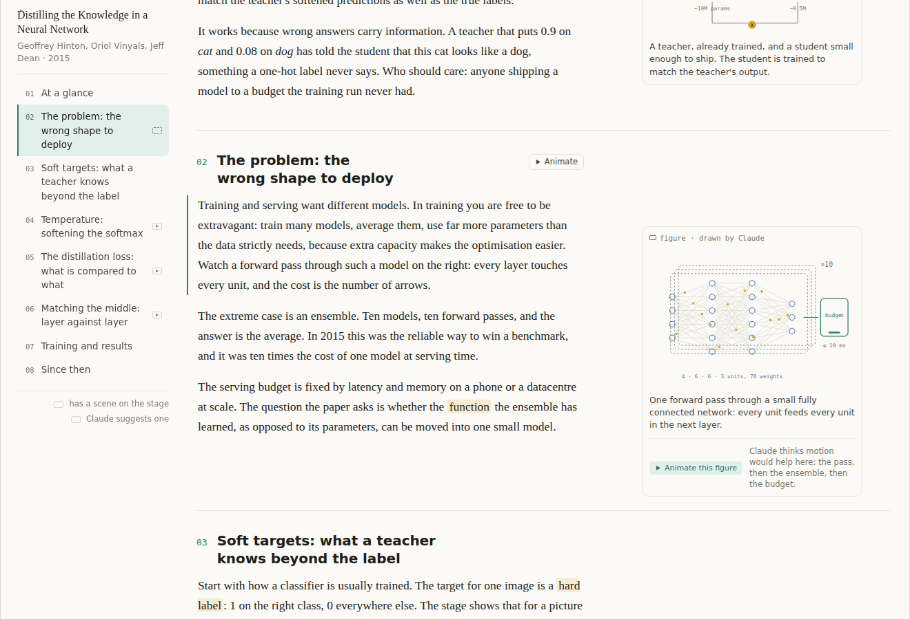
Claude suggests one
A figure Claude thinks worth animating carries Animate this figure with a one-line reason. The section head has the same button and the outline marks the section with a hollow play. Any other figure can be asked for in the Ask bar; Claude just does not offer.
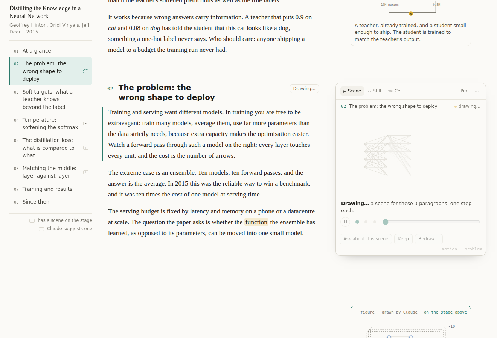
Drawing
Pressing it is a section-scoped edit like any other: Claude writes a small declarative motion block, the scene streams in node by node, and the block is saved into the page.
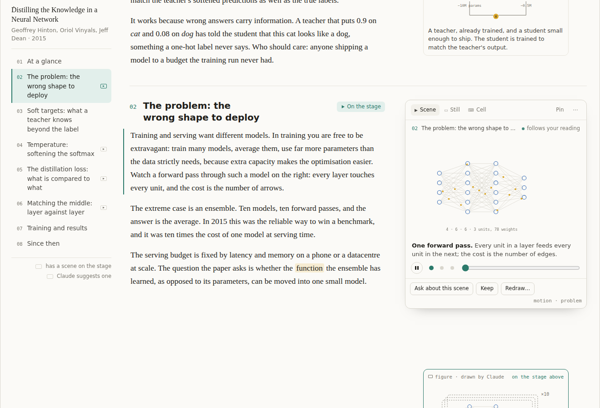
Drawn
The scene plays, bound to the paragraphs: the paragraph crossing the reading line picks the step, and reading backwards steps backwards. Dots and a slider step by hand; Pin holds a scene while you read on.
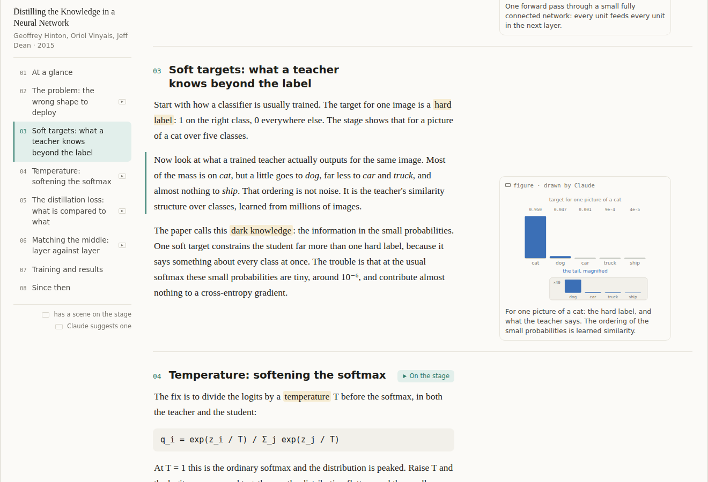
A stage per section, not per page
In the next section the stage is gone and the margin is exactly what it is now.
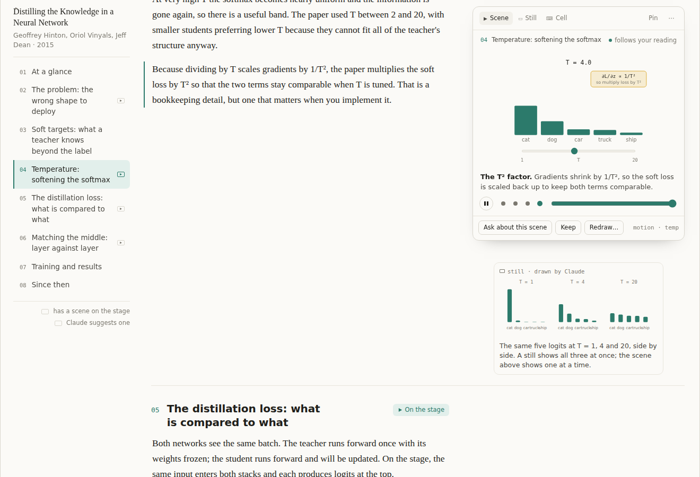
Stills and motion, both
In a section with a scene, its other margin items sit beside their paragraphs beneath the stage and come out from under it as you read on. The still shows all three temperatures at once; the scene shows one at a time.
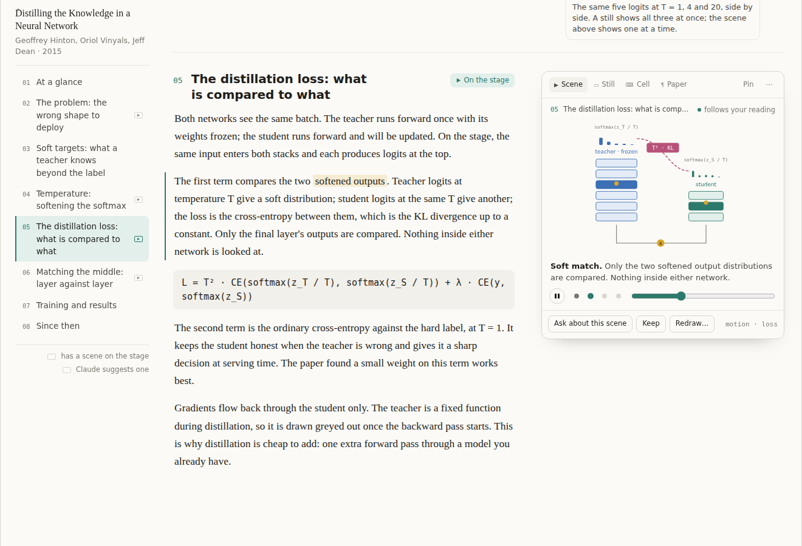
The tab row is the filmstrip
Only what the section has: the scene, its still, the cell, and the paper's own figure when Claude cites one, snipped from the PDF. Three pictures of one idea, from the most trusted to the most explanatory.
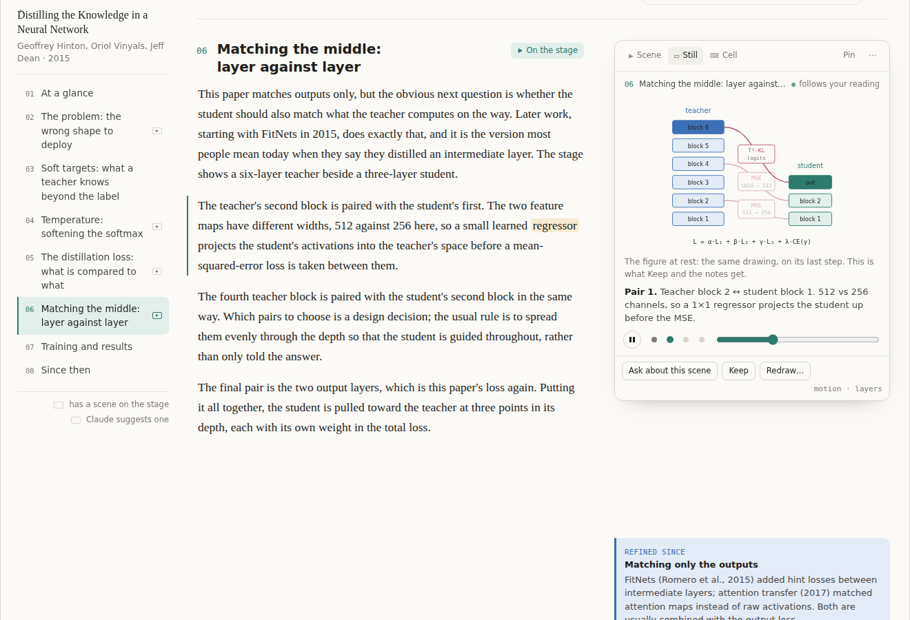
One drawing, two states
The figure and the scene are the same drawing. The margin's still is the scene on its last step, the Still tab is the resting frame, and Keep and the notes always get the still.
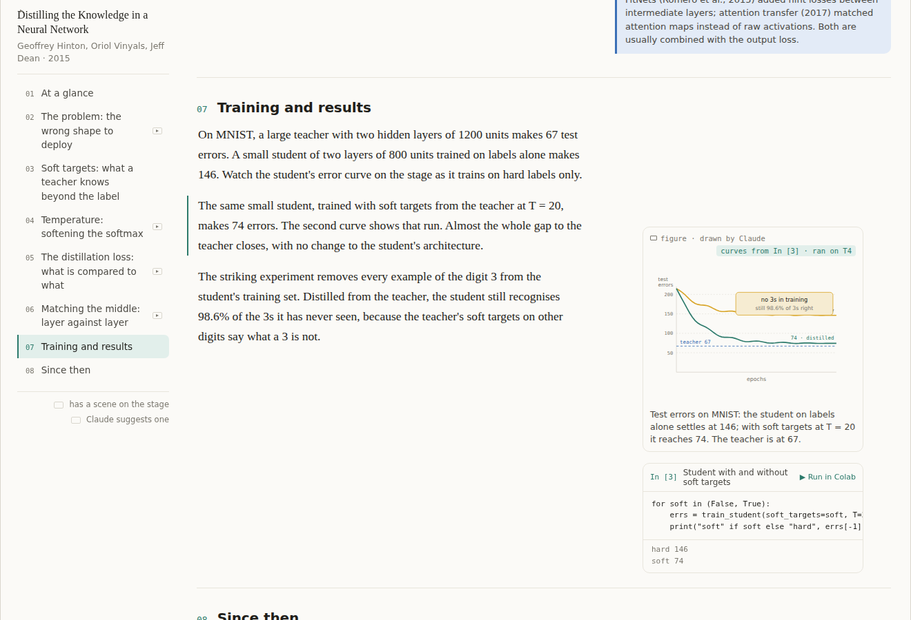
Bound to a cell when it should be
A figure or scene can name a cell. Until it runs, the illustrative values Claude wrote; after, the real ones, and which machine ran them. Drawing stays on the page; computing stays in Colab.
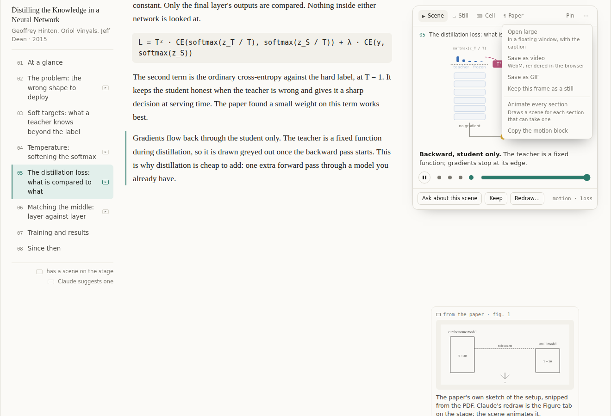
Video is an export
Nothing is generated as a video file. The menu renders the scene to WebM or GIF in the browser and keeps a frame as a still.
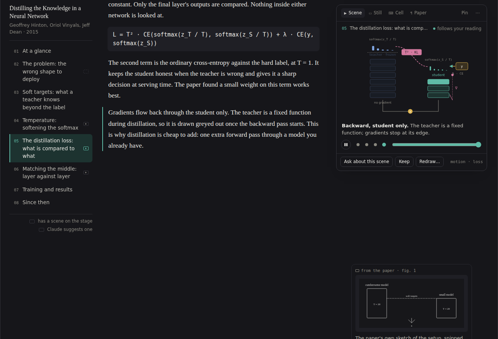
Dark
Scenes colour themselves with the same few classes the page themes for Claude's figures, so they follow light and dark like everything else.
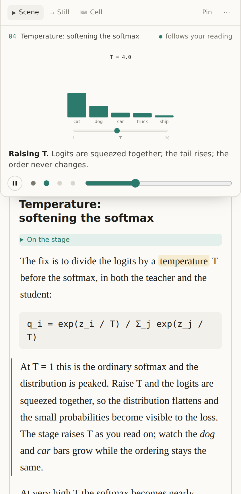
Phone
The stage is pinned to the top of the screen only while its section is read.
Open questions
- How much idle motion beside prose. The mock idles gently and has a pause; a stricter version animates only on a step change.
- Whether to show Claude's suggestions before the reader has used a scene once.
- The size of the scene vocabulary: about a dozen node kinds is the guess, and the first ten papers explained with it will say.